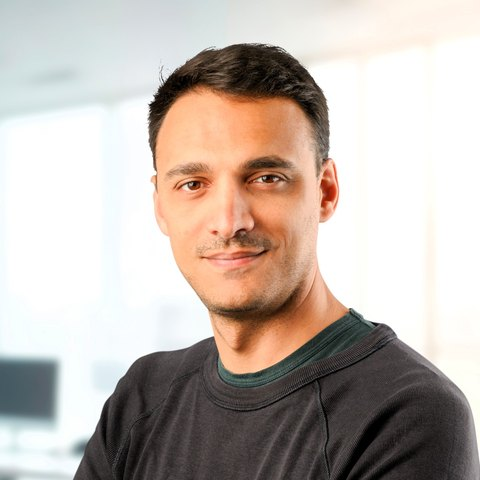

Valerio Cambareri
Principal Software Engineer
AI & Perception, Sony Depthsensing Solutions
Brussels, Belgium
I’m a Principal Software Engineer and Member of Technical Staff at Sony Depthsensing Solutions, where I work in the AI & Perception team on the algorithms behind time-of-flight cameras and 3D sensing.
My research focuses on computational imaging: designing sensing systems together with the algorithms that reconstruct images and 3D scenes from few, noisy or indirect measurements, within the memory and compute budgets of real devices. Recent work spans depth completion from very sparse time-of-flight measurements, streaming dense depth from low frame rate active sensors, monocular depth estimation for in-cabin safety, and dense SLAM and dynamic scene reconstruction with Gaussian splatting. My earlier research, during my Ph.D. and postdoc, developed compressed sensing methods with guarantees: quantized random embeddings, blind sensor calibration and compressive multispectral imaging.
news
- Sep 2026
ProDyGS, dynamic Gaussian splatting from a single static monocular camera, is now on arXiv.
- Oct 2025
ToF-Splatting, dense SLAM from sparse time-of-flight depth, was presented at ICCV 2025.
- Feb 2025
We released CabNIR, a benchmark for in-vehicle infrared monocular depth estimation, at WACV 2025.
- Oct 2024
Depth on Demand was presented at ECCV 2024.
- Jun 2024
I was elected Member of Technical Staff at Sony Depthsensing Solutions.
- Mar 2024
Range-agnostic multi-view depth estimation was presented at 3DV 2024.
selected publications


Through the Haze: A Non-Convex Approach to Blind Gain Calibration for Linear Random Sensing Models
Information and Inference, 2018

Multispectral Compressive Imaging Strategies Using Fabry–Pérot Filtered Sensors
IEEE Trans. Computational Imaging, 2018

Low-Complexity Multiclass Encryption by Compressed Sensing
IEEE Trans. Signal Processing, 2015